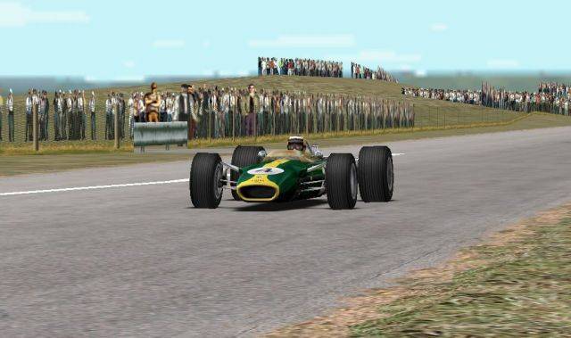
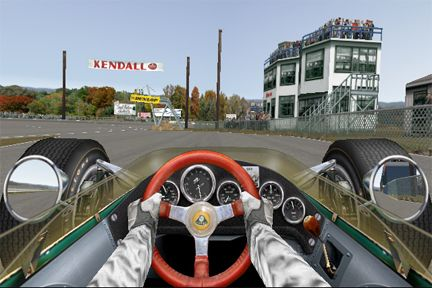

Unidentified Lotus racing game


Details
My notes
An old Lotus with one seat, an open cockpit, and a long pointed body. I played it on PC.
Identification status
Still unidentified. It is unclear whether this was in the same game as the Mini Cooper or a separate demo. No picture of the remembered game has been confirmed.
A comparison to check
Grand Prix Legends is a 1998 PC racing simulation by Papyrus, published by Sierra. It includes the 1967 Lotus 49. The car’s narrow body, exposed wheels, and single open cockpit make it a useful visual comparison with the remembered shape.
This is only a candidate. The information found so far does not connect Grand Prix Legends to the remembered Mini Cooper, dirt stage, or a specific Digit disc.
Clues that would help
- Whether the car was green and yellow, red, or another colour.
- Whether the engine was visible behind the driver.
- Whether there were wings, or only a smooth pointed nose.
- Whether the view was inside the cockpit or behind the car.
- Whether the Lotus raced on tarmac, or could actually be driven on the remembered dirt course.
- Whether the Mini and Lotus appeared in one car-selection menu.
Why the earlier guess is unresolved
Rally Trophy includes a Ford Lotus Cortina, a closed-roof saloon. That does not match the single-seat, open-cockpit description. The Mini-on-dirt memory and this Lotus memory therefore remain separate entries while the search continues.